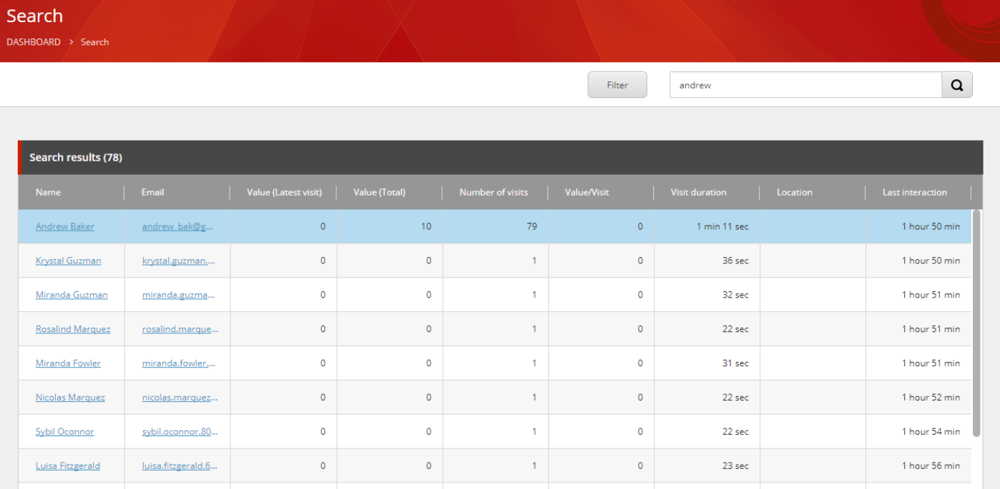

エクスペリエンスプロファイル検索を利用する¶
エクスペリエンスプロファイル検索では、コンタクトのグループや特定のコンタクトを検索することができます。これにより、連絡先が生成した1回の訪問あたりの価値、連絡先がウェブサイトを訪問する際に使用したチャネルやデバイスの種類、連絡先がコンテンツとインタラクトした際にコンバージョンした目標や成果についての洞察を得ることができます。この情報は、コンタクトをターゲット化してセグメント化し、タイムリーで関連性の高い情報をコンタクトに提供するのに役立ちます。
検索結果には、連絡先に関する以下の情報が表示されます。
情報 |
詳細 |
名前 |
連絡先の名前 |
メールアドレス |
連絡先のメールアドレス |
値（最新値） |
コンタクトがあなたのウェブサイトを最後に訪れたときに蓄積されたエンゲージメントの価値 |
バリュー(合計) |
コンタクトの総エンゲージメント価値 |
訪問回数 |
コンタクトがあなたのウェブサイトに行った総訪問回数 |
1回あたりの価値 |
コンタクトが発生させた1回の訪問あたりの平均エンゲージメント値 |
訪問期間 |
ホームページで接触した際の滞在時間 |
最後の相互作用 |
コンタクトが最後にあなたのウェブサイトを訪問してからの経過時間 |
エクスペリエンスプロファイルで連絡先を探す方法は2つあります。
ファセット検索¶
ファセット検索を実行するには
エクスペリエンス プロフィールの検索ページで、フィルタ ボタンを選択します。
検索フィルタ ウィンドウの [日付範囲] の下の [開始日] と [終了日] のピッカーで、検索対象の日付範囲を選択します。
{kind=link}
ファセットカテゴリのチェックボックスを選択します。
ドロップダウンリストから、フィルタリングする特定のファセットまたはファセットのチェックボックスを選択します。適用] をクリックして、検索ファセットを適用します。
{kind=link}
検索した結果がリストとして表示されます。
テキスト検索¶
デフォルトでは、連絡先名などの個人を特定できる情報（PII）を検索することはできません。ただし、管理者はPIIの機密データのインデックスを有効にすることができます。デフォルトでは、この操作はデータ量のために多くの処理能力を消費するため、匿名の連絡先についても検索は無効になっています。ただし、管理者が匿名データのインデックス作成を有効にすることは可能です。
テキスト検索を実行するには
ダッシュボードのエクスペリエンスプロファイルで、[フィルタ]ボタンを選択します。
検索テキストフィールドに検索テキストを入力し、検索アイコン  をクリックします。
検索した結果がリストとして表示されます。